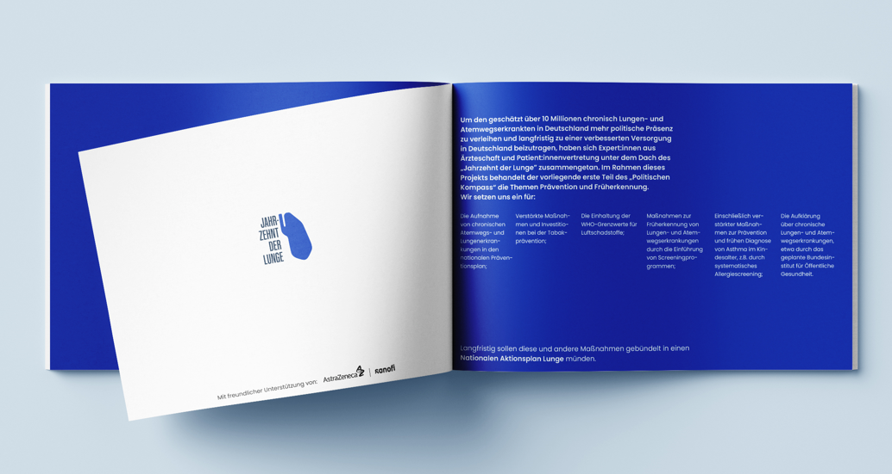

Pressemitteilung: Expert:innenkreis stellt politische Forderungen vor – Politischer Kompass für bessere Prävention und Früherkennung von Lungenerkrankungen

Berlin, 12. Dezember 2022. Unter dem Dach der Initiative Jahrzehnt der Lunge fordern Expert:innen aus Ärzt:innenschaft und Patient:innenvertretung einen Nationalen Aktionsplan Lunge. Schon bevor Covid-19 die öffentliche Aufmerksamkeit auf die Lunge lenkte, galten chronische Lungen- und Atemwegserkrankungen wie Asthma und COPD mit schätzungsweise über 10 Millionen Betroffenen als Volkskrankheiten in Deutschland. Sie zählen zu den häufigsten Todesursachen. Studien schätzen, dass die Prävalenzen noch weiter steigen werden, was eine zunehmende Belastung für das Gesundheitssystem bedeutet. Zusätzlich verursacht beispielsweise COPD hohe indirekte Kosten durch Arbeitsausfälle und vorzeitige Verrentung. Dennoch finden chronische Lungen- und Atemwegserkrankungen in der politischen Diskussion nur ungenügend statt.
„Mit dem Jahrzehnt der Lunge wollen wir die Grundlagen für eine bessere Prävention, frühere Diagnosestellung und individuellere Versorgung legen. Wir müssen uns von der Erkenntnis leiten lassen, dass einige Lungenerkrankungen vermieden oder zumindest ein schwerer Verlauf verhindert werden könnten. Dazu bedarf es jedoch eines politischen Willens, die bestehenden Versorgungslücken in der Breite anzugehen", so Prof. Dr. Claus Franz Vogelmeier, einer der Expert:innen und Direktor der Klinik für Innere Medizin, Pneumologie, Intensiv- und Schlafmedizin am Universitätsklinikum Marburg. Um Impulse zu liefern, bringen sich die Expert:innen in die politische Diskussion ein. Dafür haben sie den Politischen Kompass: Prävention und Früherkennung mit konkreten Handlungsempfehlungen entwickelt. Neben der Aufnahme chronischer Lungen- und Atemwegserkrankungen in den nationalen Präventionsplan und einer verbesserten Früherkennung durch optimierte Screenings, setzen sich die Expert:innen auch für eine bundesweite Sensibilisierung zu den Krankheitsgebieten ein. Der Politische Kompass inklusive aller Forderungen kann hier eingesehen werden.
Fachforum Gesundheit – Asthma, COPD und Co.
Unter dem Titel „Asthma, COPD und Co. – wie man die Volkskrankheiten der Lunge bekämpfen kann" fand am 23. November in Berlin ein Fachforum Gesundheit statt. In der vom Tagesspiegel ausgerichteten Veranstaltung diskutierten die Teilnehmenden die Herausforderungen in den Feldern Prävention, Früherkennung und Versorgung mit politischer Beteiligung aus dem Bundesgesundheitsministerium. Dabei waren sich die anwesenden Expert:innen einig: Es ist Zeit zu handeln. In Anbetracht der steigenden Patient:innenzahlen sowie der hohen individuellen und gesellschaftlichen Belastung durch Lungenerkrankungen könnten selbst einfache politische Maßnahmen Großes bewirken.
Prof. Dr. Monika Gappa, Chefärztin der Klinik für Kinder- und Jugendmedizin, Evangelisches Krankenhaus Düsseldorf, machte sich für ein Umdenken stark: „Wir brauchen ein langfristiges Konzept, einen Nationalen Aktionsplan Lunge. Deshalb haben wir das Jahrzehnt der Lunge ausgerufen und fordern ein Umdenken für verbesserte Prävention, Früherkennung und Versorgung, etwa durch Lungenfunktionsscreenings im Rahmen von Vorsorgeprogrammen ab dem Kindesalter an. Lungengesundheit beginnt bereits in der Kindheit." Auch Dr. Sonja Optendrenk, Leiterin der Unterabteilung „Zielgruppenspezifische Prävention, Nicht übertragbare Krankheiten" im Bundesgesundheitsministerium, sah den Handlungsbedarf: „Ich würde mir wünschen, dass wir in dieser Legislaturperiode deutliche Fortschritte beim Thema Prävention machen. Dazu bedarf es auch einer intensiveren Zusammenarbeit der Ministerien. Damit haben wir begonnen."
Expert:innen ziehen an einem Strang
Der Expert:innenzusammenschluss des Jahrzehnts der Lunge besteht seit Ende 2021. Ziel der Initiative ist es, Politik und andere Träger:innen des Gesundheitssystems bei der Ausgestaltung von nachhaltigen und systematischen Maßnahmen im Bereich der chronischen Lungenerkrankungen zu unterstützen. Neben dem Politischen Kompass führt die Website der Initiative die Stimmen und das Fachwissen der Expert:innen zusammen. Der Informationshub bietet eine kompakte Übersicht zu den politischen Forderungen und laufend aktualisierte Informationen. Weiterhin gibt es die Möglichkeit, sich direkt über ein Kontaktformular an die Initiative zu wenden.
AstraZeneca und Sanofi unterstützen das Jahrzehnt der Lunge und setzen sich gemeinsam mit Expert:innen für bessere strukturelle und politische Rahmenbedingungen bei der Versorgung von Patient:innen mit Lungenerkrankungen ein. Die inhaltliche Hoheit obliegt den in die Initiative eingebundenen Expert:innen.
Mehr über das Jahrzehnt der Lunge erfahren Sie hier: www.jahrzehntderlunge.de
Kontakt
Isabel Hoffmann-Ludwig
jdl@apcoworldwide.com
+49 172 1749905
Pressekontakt AstraZeneca: Miriam Hofmann · miriam.hofmann@astrazeneca.com · +49 173 6494130
Pressekontakt Sanofi: Leyla Yazdan Panah · presse@sanofi.com · +49 69 305-84412
DE-52551 · MAT-DE-2205342-1.0-11/2022